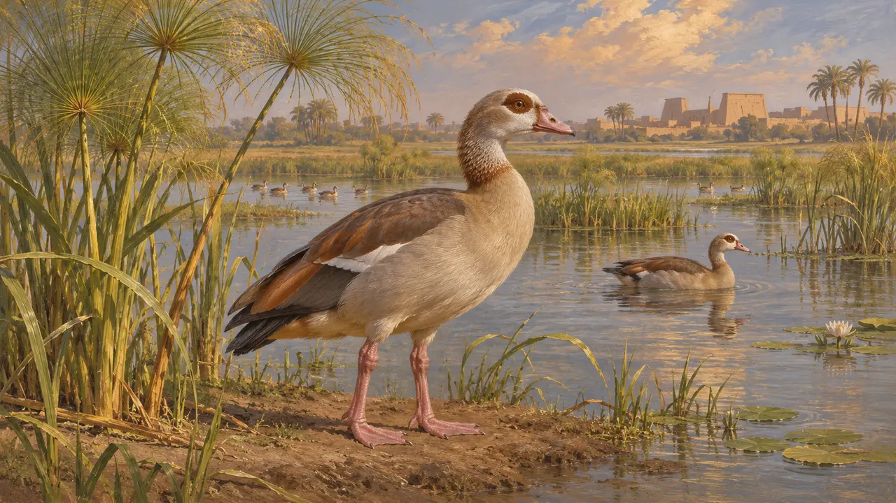
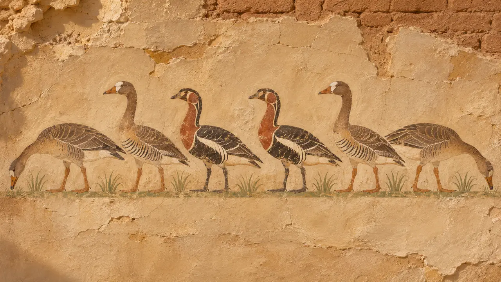
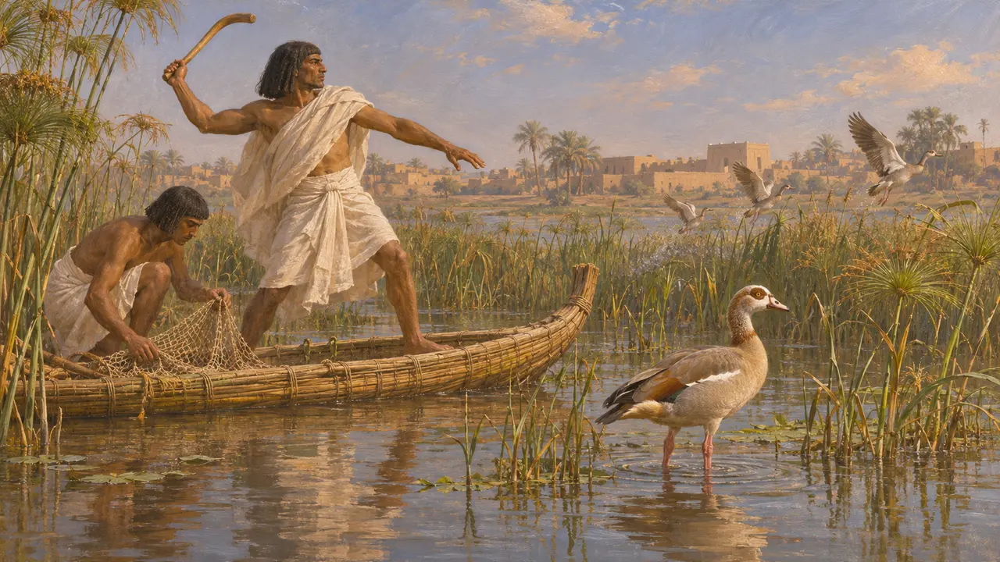
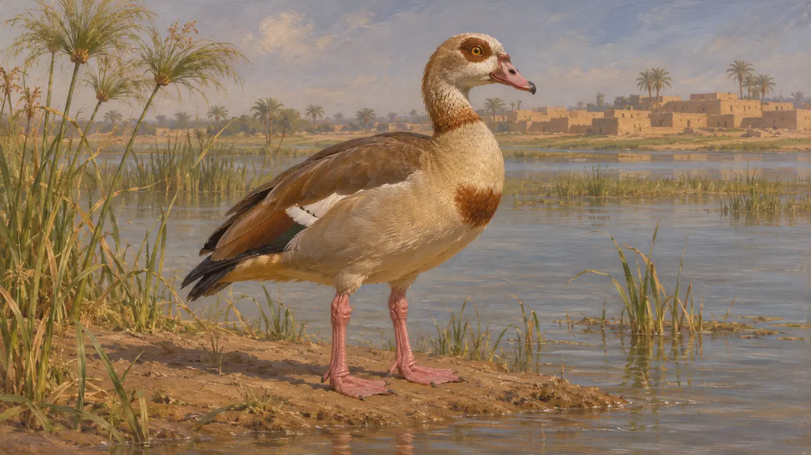

غاز مصری (Alopochen aegyptiaca) پرندهای پابلند و غازمانند از دشت نیل و آفریقای جنوب صحراست. هنرمندان مصری هزاران سال پیش از فتح پارسیان پرندگان مرداب را نقاشی و حکاکی میکردند. این پرنده جلوهای کوچک از منظرهٔ نیل به ممفیس میبخشد، هرچند منابع دربارهٔ این گونه چیز چندانی نمیگویند.
در بازی: بازی غاز مصری را بهصورت دستهای پرنده که بر آب نیل در ممفیس شناورند میکشد. این فقط صحنهآرایی است و هیچ قاعدهای آن را نمیخواند.

پرندهای از نیل و مردابهایش
در اسنادپرندگان آبزی در سراسر صحنههای مردابی که بر گورهای مصری نقاشی و کندهکاری شدهاند دیده میشوند، جایی که صاحب گور در میان پاپیروسها در حال شکار پرنده و ماهیگیری نشان داده شده است. این صحنهها قرنها قدیمیتر از فتح مصر به دست پارسیان در 525 هستند. آنها نشان میدهند مردابهای نیل سرشار از پرنده بودند، و تالابهای نزدیک ممفیس نیز احتمالاً هنگام ورود کمبوجیه چنین بودند.
Egyptian tomb scenes of marsh fowling

غازهای میدوم گونههایی دیگرند
مورد مناقشهنقاشی غازها از نمازخانهٔ گوری در میدوم، از پادشاهی قدیم، گاه نمایانگر غاز مصری انگاشته میشود. پژوهندگان امروزین این نقاشی پرندگان آن را غاز مزرعه، غاز پیشانیسفید و غاز سینهسرخ میدانند. غاز مصری پرندهای جداست و با مرغابیهای شلداک خویشاوندی نزدیکتری دارد تا با غازهای راستین. شناسایی پرندگان نقاشیشده بر داوری امروزین دربارهٔ رنگدانه و طرح بیرونی استوار است، از این رو هر مورد جداگانه محل بحث است.
P. Houlihan, The Birds of Ancient Egypt, 1986

پرندگان همچون خوراک و پیشکش
در اسنادنقشهای آرامگاهی و پیشکشی مصر، پرندگان را بهعنوان خوراک، هدیه برای مردگان و شکاری نشان میدهند که با تور و چوبپرتابی صید میشد. پرندهگیری در مرداب هم پیشهای اشرافی بوده و هم منبع خوراک. این نقشها بهتنهایی نشان نمیدهند در دورهٔ پارسی چه گونههایی صید میشدند.
Egyptian tomb scenes of fowling and offering

آنچه هرودوت میگوید
مورد مناقشههرودوت آیینها و جانوران مصر را به تفصیل توصیف میکند، از جمله جانوران مقدس. او از پرندهای که آن را غاز روباهی مینامد بهعنوان پرندهای مقدس نزد خدای نیل یاد میکند. غاز روباهی را معمولاً همان غاز مصری میدانند، اما ادعاها دربارهٔ این پرنده در ممفیسِ دورهٔ پارسی بیشتر بر پراکنش طبیعی آن استوار است.
Herodotus 2.72
منابع
- Herodotus 2.72
- Egyptian tomb scenes of marsh fowling, Old Kingdom to Late Period
- P. Houlihan, The Birds of Ancient Egypt, 1986